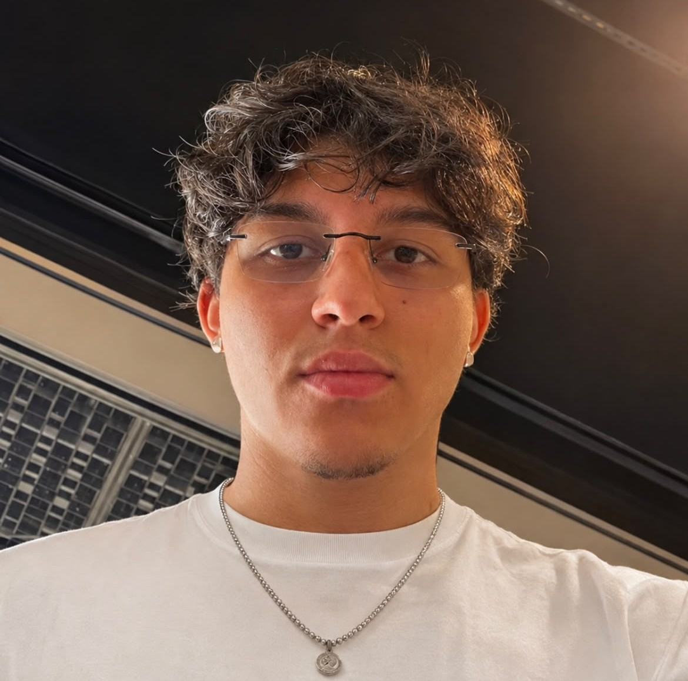
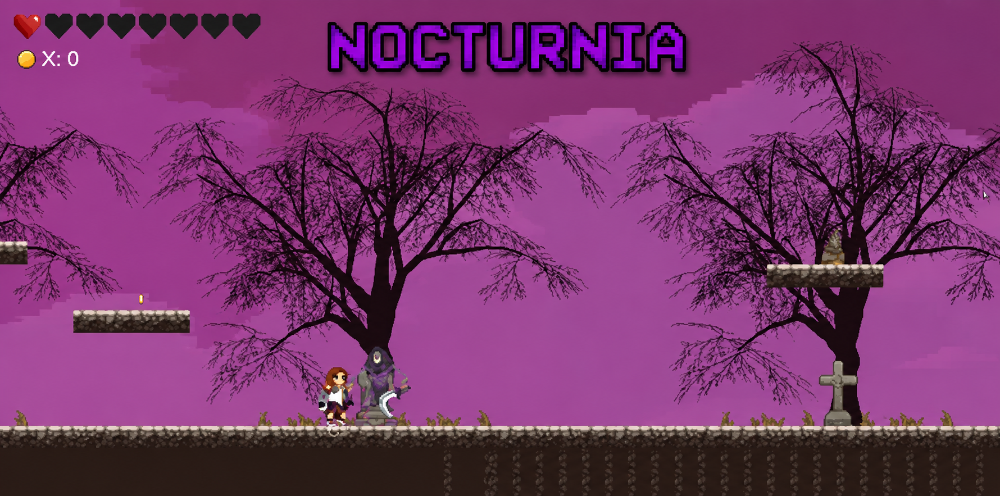
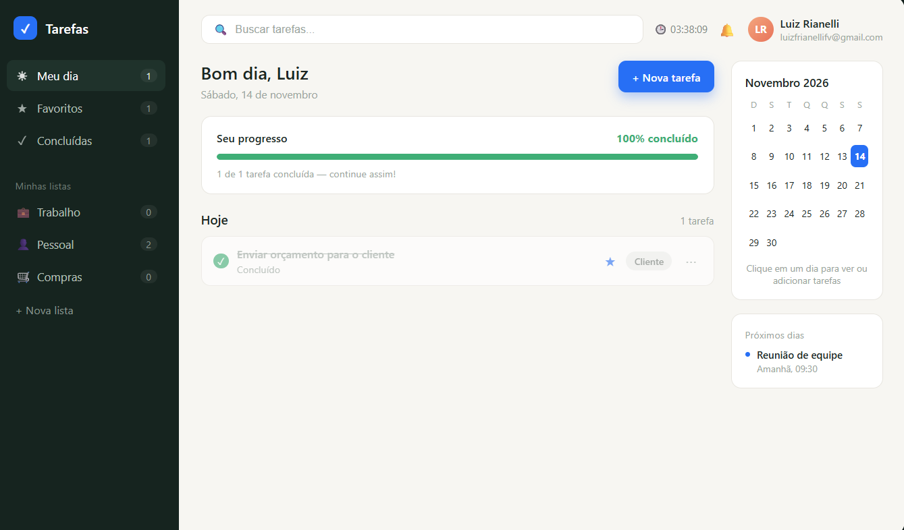

Backend & dados
Java · Spring Boot · APIs REST · Python · C · Node.js · SQL · MySQL
DESENVOLVIMENTO · CURIOSIDADE · PROPÓSITO
Desenvolvedor Backend Java
Transformo problemas da rotina em soluções digitais. Entre código, automações e novas ideias, construo para tornar a vida mais simples.
Sou Luiz Fernando Rianelli, desenvolvedor com foco em backend Java e estudante de Ciência da Computação na Universidade Veiga de Almeida.
Gosto de traduzir problemas de organização diária em aplicações práticas. Minha motivação é devolver às pessoas o controle da rotina, enquanto sigo aprendendo e evoluindo a cada projeto.

Java é meu foco. Exploro outras linguagens e ferramentas para escolher o caminho adequado a cada problema.
// aprender também faz parte do processo
public class Developer {
String nome = "Luiz Rianelli";
String foco = "Backend Java";
void construir() {
entenderProblema();
escreverCodigo();
testarEAprender();
}
}Java · Spring Boot · APIs REST · Python · C · Node.js · SQL · MySQL
Python · n8n
HTML · CSS · JavaScript · TypeScript
Git · GitHub


Minha trajetória combina a formação em Ciência da Computação com cursos que ampliam minha base técnica e acompanham minha evolução no desenvolvimento de software.
→
Universidade Veiga de Almeida — UVA
Conclusão prevista para dezembro de 2027.
→ Em andamento
DIO · Itaú
Aprofundamento em Java e inteligência artificial, complementando minha formação em desenvolvimento backend.
Uma formação construída também fora da universidade, com cursos em diferentes instituições e plataformas de ensino.
UMA BOA CONVERSA PODE SER O PRÓXIMO PASSO.
Tem um projeto para tirar do papel, uma oportunidade na equipe ou uma ideia para compartilhar? Me envie uma mensagem e vamos conversar.
Falar comigo ↗Abre uma mensagem no Gmail. Usar meu aplicativo de e-mail ↗